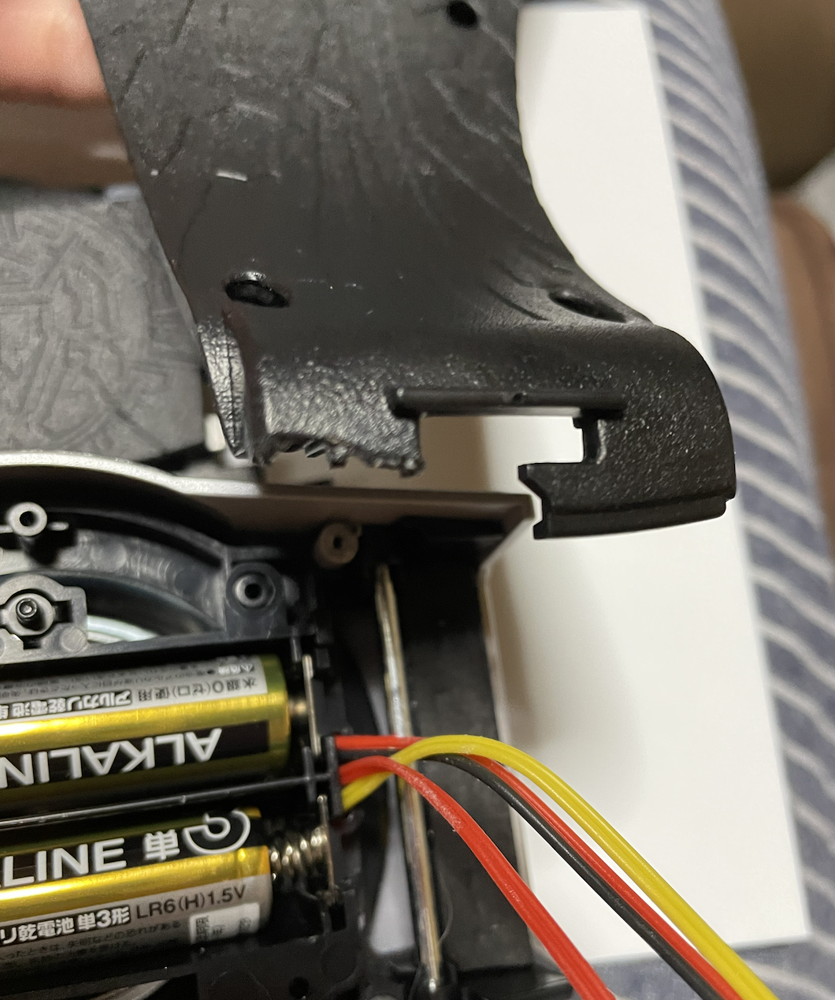
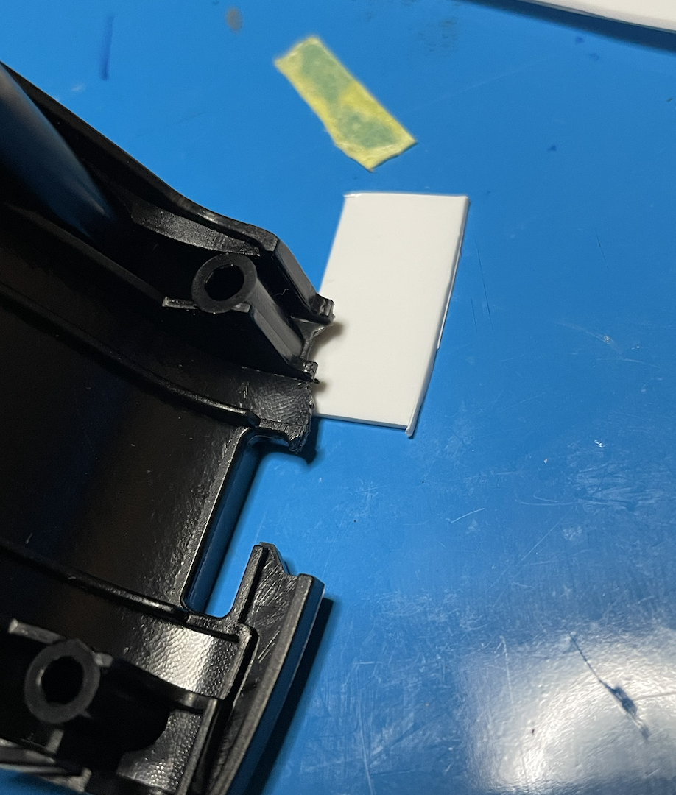
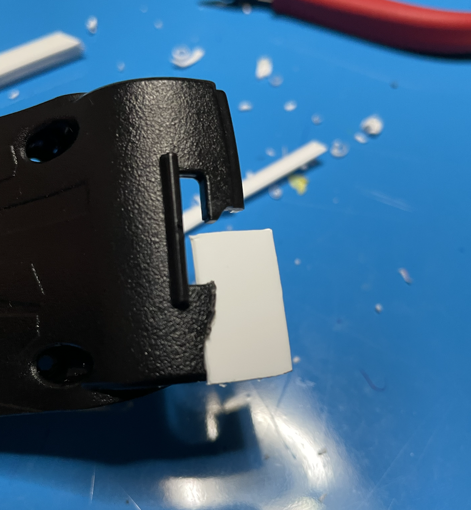
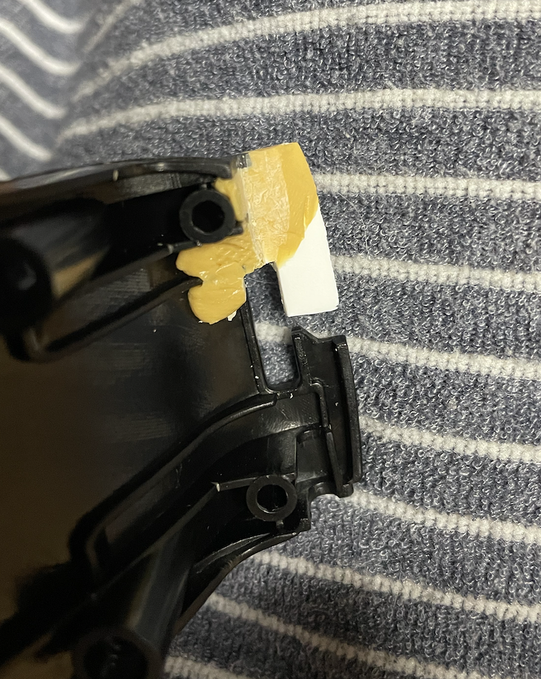

破損品修理
今回はプラ製のおもちゃの折れ・割れ・ひびの修理方法を紹介していきます。
買ってきたのはCSMオルタリング 仮面ライダーアギトのベルトです。お値段なんと１万３千円！定価が３万くらいですが今はプレミア価格が付いていて５万くらいなのでとても安かったです。
しっかり治せるかという不安は手を出せば最後、すぐ直せました。
破損部位特定
まずジャンク扱いになった原因のパーツを見てみましょう。この ようにサイドバックルと正面部分を繋ぐ接続部が折れて無くなっています。これは珍しい話でもなく一次発送の商品に多くみられる症状で 工場組み立て時に不備があったようです。しかし、後に商品交換してくれる事になったはずですがこのベルトを売った人はなぜ交換しなかったのでしょうか？
下準備
結論から言うと接着剤と重曹を使った方が強度も時間も良かった気がしました。 しかし、私はプラモ用パテをすでにくっつけてしまったのでこれで直していきます。接続部のシャフトを覆うパーツを直すのですがこのままだと強度が足りないので中にプラ板を入れていきます。
セリアのプラ板１cm？を2〜３枚重ねて接着し、破損箇所にくっつけていくのですが、このままだとベルト側の パーツが荒れているのでやすりで整えていきます。接着面が平らになったらプラモ用接着剤でくっつけます。 乾燥したらパテを盛っていきます。今回使うのは２つのパテを混ぜて使うタイプの物です。 パテを盛ったら固まるまで待ちます。

固まったら棒が通る部分をヤスリで整えて完成です！塗装は見えない部分なのでそのままにしておきます。